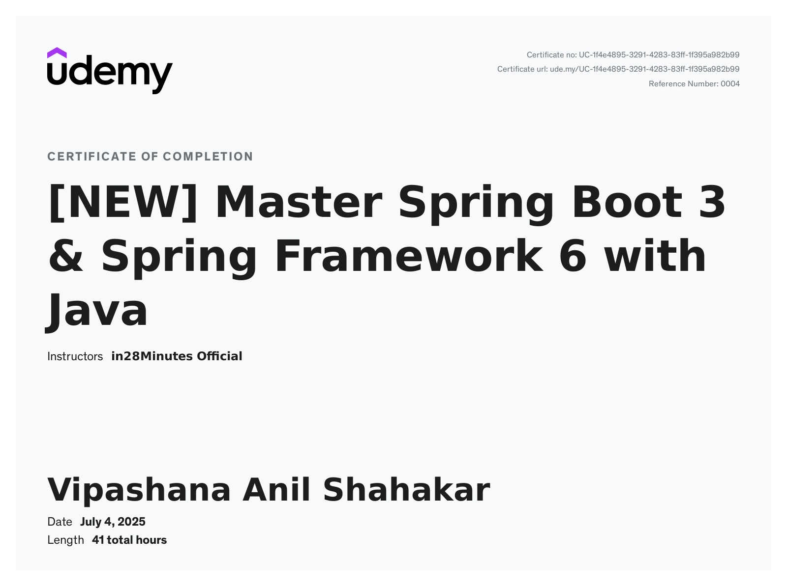
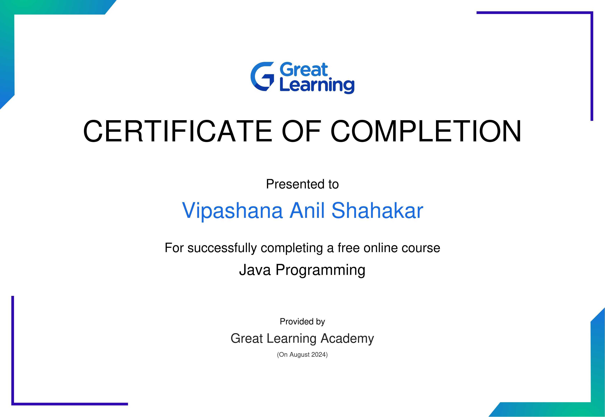
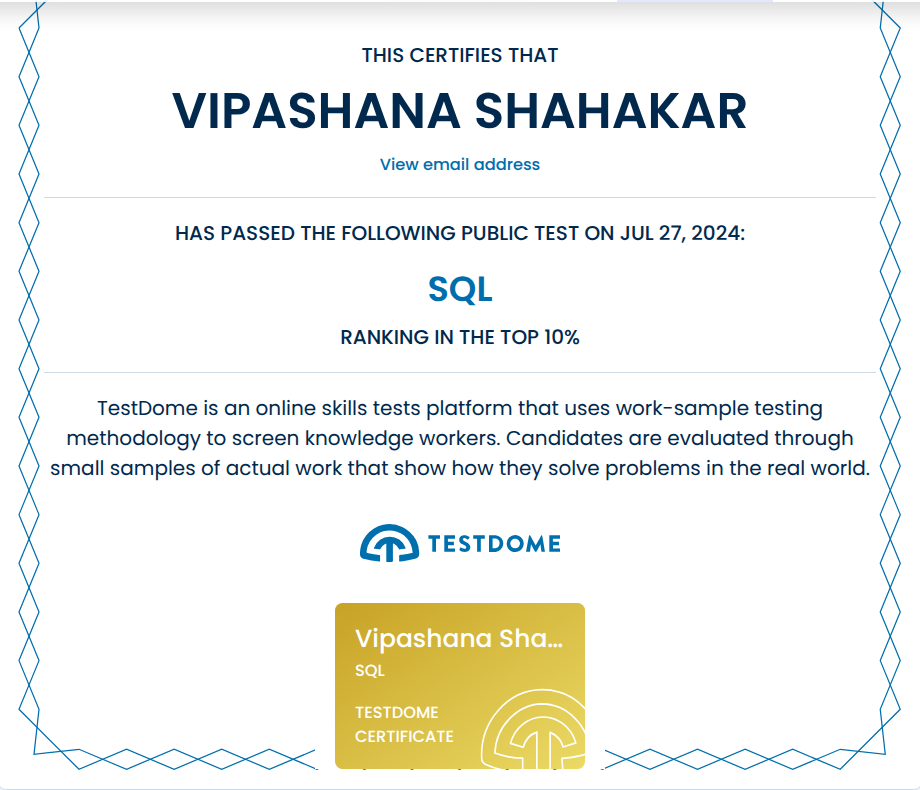
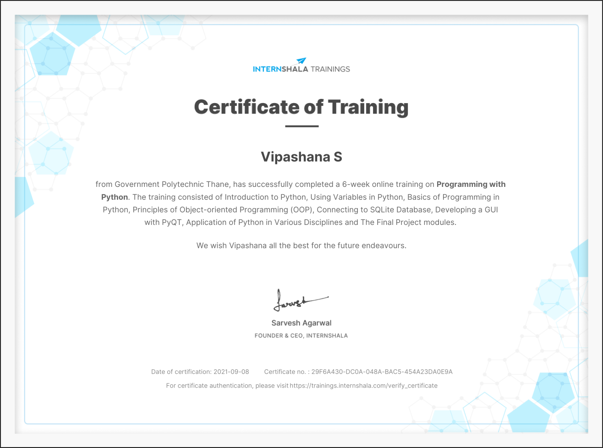
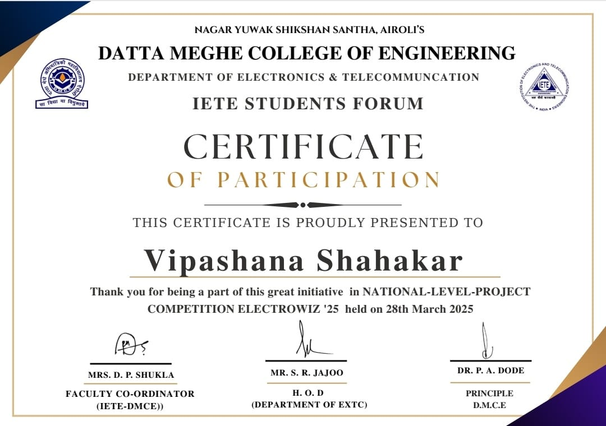

Aspiring Software Developer | Java | Spring Boot | Web Development | Problem Solving
Computer Engineering student with a strong foundation in Java, Data Structures, and Object-Oriented Programming.
Experienced in building full-stack web applications using Spring Boot, MySQL, and front-end technologies.
Completed multiple academic and personal projects, demonstrating a solid grasp of backend logic, database integration, and responsive UI design.
Passionate about coding, quick to learn, and dedicated to delivering clean, efficient, and user-focused solutions.
Seeking an opportunity to contribute to challenging real-world projects and grow as a professional developer.
Master Spring Boot Certificate

Java Certificate

SQL Certificate

Python Certificate

Project Competition Certificate
